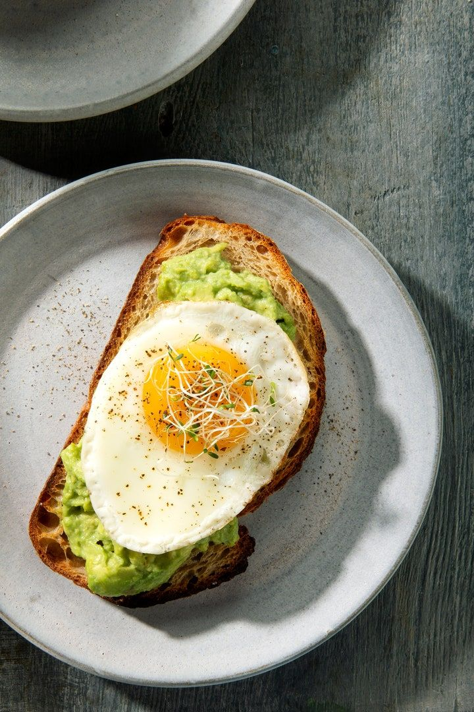

Tostadas de Aguacate

Ingredientes
- 2 rebanadas de pan
- 1 aguacate maduro
- Pizca de sal y pimienta
Preparación
Primero se tuesta el pan. Luego se majar el aguacate en un plato y se pone sobre el pan. Se sazona al gusto y listo para comer.

Primero se tuesta el pan. Luego se majar el aguacate en un plato y se pone sobre el pan. Se sazona al gusto y listo para comer.